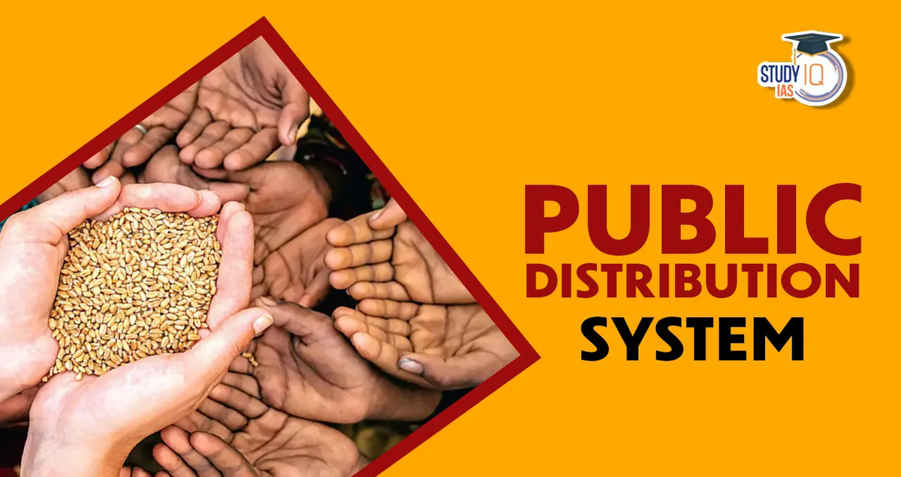
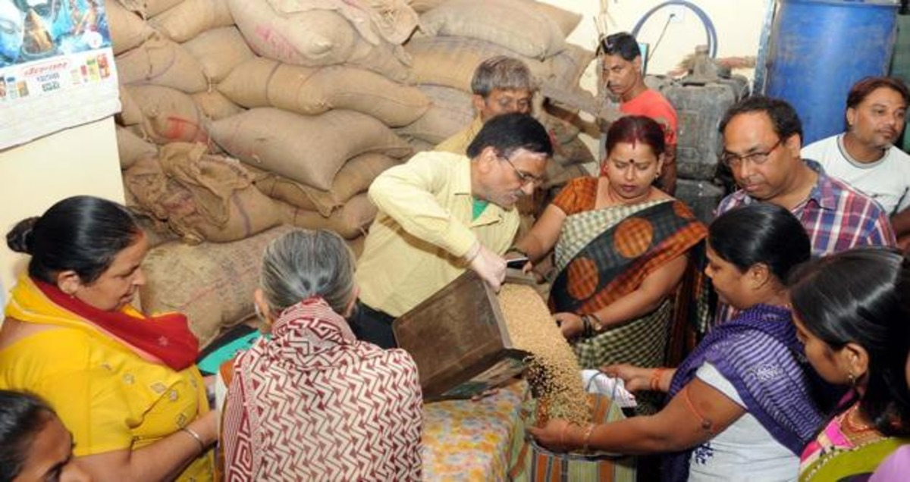
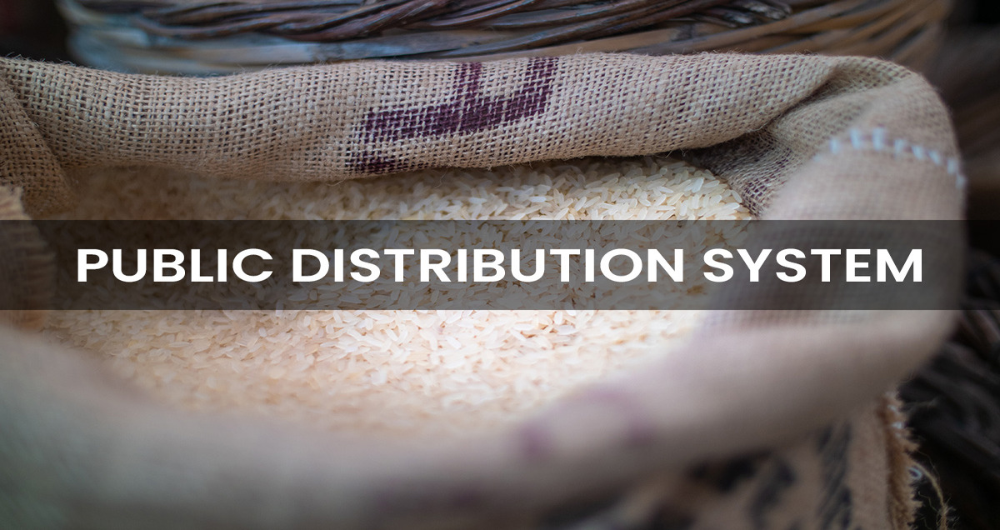

The Public Distribution System (PDS) evolved as a system of management of scarcity through distribution of foodgrains at affordable prices. Over the years, PDS has become an important part of Government’s policy for management of food economy in the country. PDS is supplemental in nature and is not intended to make available the entire requirement of any of the commodities distributed under it to a household or a section of the society. PDS is operated under the joint responsibility of the Central and the State/UT Governments. The Central Government, through Food Corporation of India (FCI), has assumed the responsibility for procurement, storage, transportation and bulk allocation of food grains to the State Governments. The operational responsibility including allocation within State, identification of eligible families, issue of Ration Cards and supervision of the functioning of Fair Price Shops (FPSs) etc., rest with the State Governments. Under the PDS, presently the commodities namely wheat, rice, sugar and kerosene are being allocated to the States/UTs for distribution. Some States/UTs also distribute additional items of mass consumption through the PDS outlets such as pulses, edible oils, iodized salt, spices, etc



